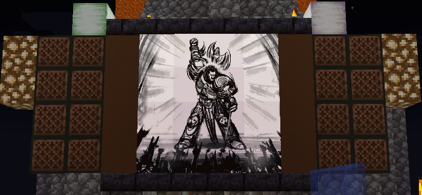

ImageFrame

ImageFrame
ImageFrame allows you to load a picture from the Internet to a Minecraft map.
Plugin description
- Loads an image from a URL into a map. PNG, JPEG, WEBP and GIF are supported.
- Get them in Map form or directly on Item Frames! (Select your Item Frames with the smart selection tool!)
- Automatic image fitting means your images won't be stretched!
- Your image will be centered.
- Images will be animated if they are GIFs. Animated up to 1/20 of a second. Animation tasks run asynchronously
- Have your image span across multiple maps. Automatic image fitting works across all sizes too.
- You can put your map in an item frame.
Commands list
- /imageframe select - Select item frames to put image maps on
- /imageframe create <name> <url> <width> <height> - Create a new image map
- /imageframe create <name> <url> selection - Create a new image map and put it directly in your selected item frames
- /imageframe create <name> <url> <width> <height> combined - Create a new image map and get its Combined ImageMap item
- /imageframe overlay <name> <url> - Create a new image map that adds an overlay on a Minecraft Vanilla map you are holding
- /imageframe overlay <name> <url> selection - Create a new image map that adds an overlay on a Minecraft Vanilla map in your selected item frames
- /imageframe clone <name> <new_name> - Create a new image map with the same properties as the old one
- /imageframe clone <name> <new_name> selection - Create a new image map with the same properties as the old one and put it directly in your selected item frames
- /imageframe clone <name> <new_name> combined - Create a new image map with the same properties as the old one and get its Combined ImageMap item
- /imageframe playback <name> pause - Toggle pause for an animated image map
- /imageframe playback <name> jumpto <seconds> - Jump to a specific second for an animated image map
- /imageframe refresh [optional:image_name] [optional:new_url] - Refresh a map you've created from source url
- /imageframe info - Get info related to the image map you are holding
- /imageframe get <name> - Get a self-created pre-existing image map
- /imageframe get <name> selection - Put a self-created pre-existing image map directly on your selected item frames
- /imageframe get <name> combined - Get a self-created pre-existing image map in its Combined ImageMap form
- /imageframe delete <name> - Delete a self-created pre-existing image map
- /imageframe rename <name> <new_name> - Rename a self-created pre-existing image map
- /imageframe list - List all self-created pre-existing image maps
- /imageframe marker add <image_name> <marker_name> <direction:0-15> <marker_type> [optional:caption] - Add a marker to your map
- /imageframe marker remove <image_name> <marker_name> - Remove a marker from your map
- /imageframe marker clear <image_name> - Clear all markers from your map
- /imageframe setaccess <name> <player> <permission> - Set access permission of other players for your map
Videos
Want video demonstrations? Here are some videos made by some awesome people!
Video by ServerMiner in English:Video by KasaiSora in English: